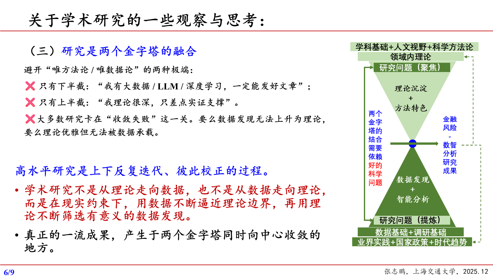
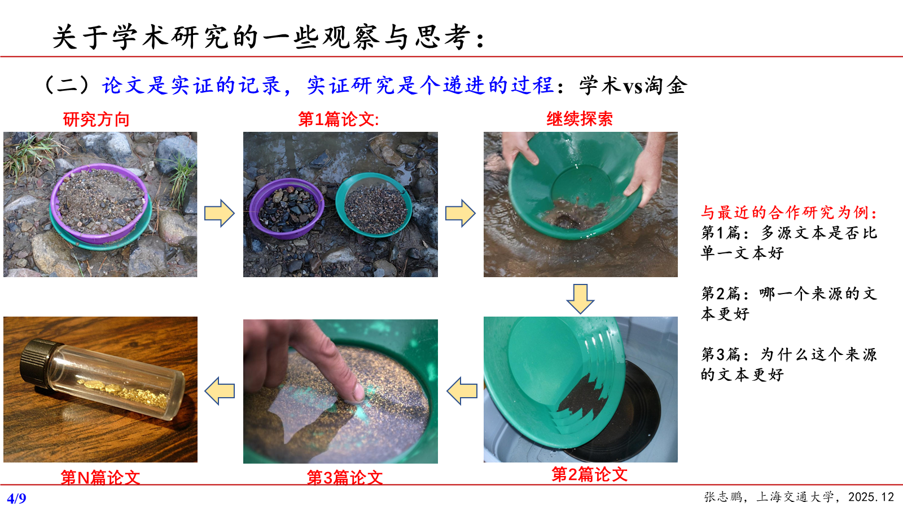
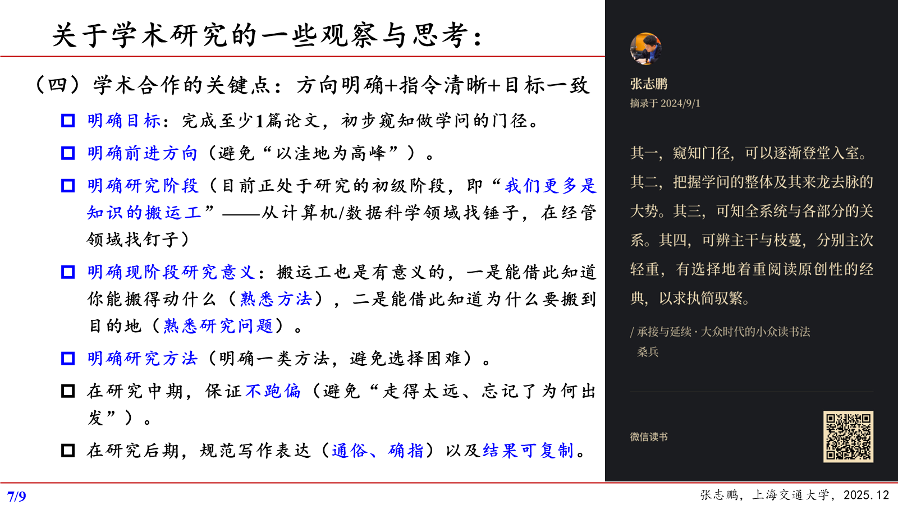
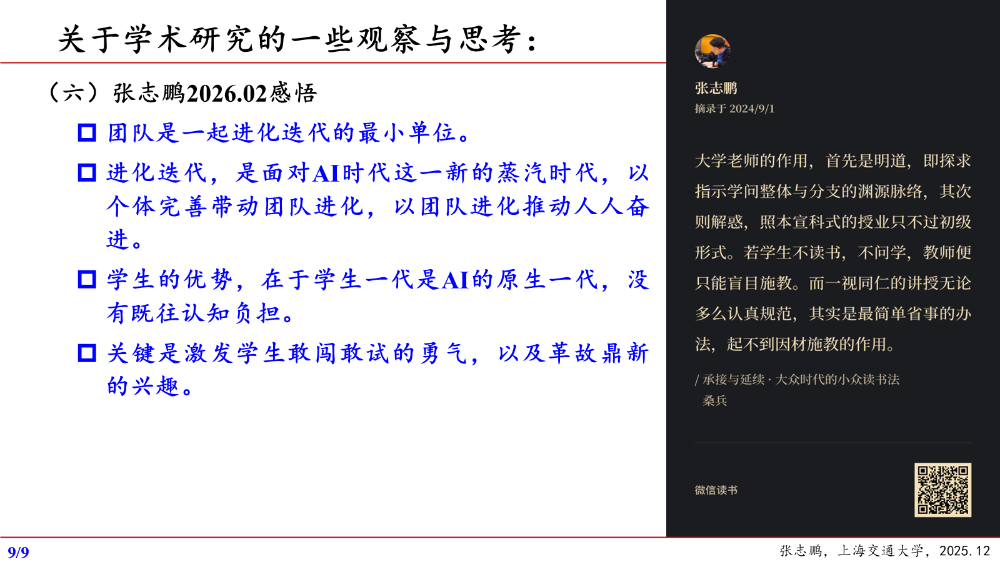

一个科研青年工作者的随笔与记录
持续生长的电子书
写在前面
做研究、带学生，也是在逐渐认识自己。一个问题为什么值得做，一次指导为什么没有达到预期，一段忙碌为什么使人疲惫，这些疑问常在具体工作之后才出现。
这些文字来自我留下的笔记。有些判断现在仍认同，有些在实践中需要修改。我希望把思考写得足够具体，让自己能看见依据，也看见还没有解决的地方。
全书分为三编：形成自己的研究，帮助学生成为研究者，在做事中成为自己。研究使我面对证据和解释，育人使我反思帮助与责任，生活则不断提醒我，愿意做的事情也要有持续承担的能力。
第一编 形成自己的研究
第一章 为什么值得研究
研究的开始，是辨认什么值得投入。现实提出了什么问题，自己的理解能推进到哪里，已有的经验又会不会让自己停在熟悉的做法里？这些判断决定一项工作为什么值得开始，也决定它应当往哪里深入。
思维与语言
工具越来越强，我越觉得，研究者的本领会更多地显现在选什么问题、怎样把问题说准上。我说的思维能力，包含一种审美：在许多可以做的事情中，辨认哪些值得做。
这种审美不能只看题目够不够大。一个题目包罗万象，却没有可辨认的关系，研究就无从进入。相反，一个很小的现象，如果使我们看见一类事情为什么发生，也可能有普遍意义。问题的大小，要看它能解释什么，而不能只看标题覆盖多少对象。
语言在这里参与思考。比如说“研究风险”，听上去方向明确，实际上还没有说清是谁的风险、什么变化带来风险、准备判断哪一种后果。每增加一个准确的限定，都在作一次研究选择：纳入什么，排除什么，凭什么划定边界。
我因此很在意那些反复改也写不顺的句子。有时缺的是一个词，有时缺的是对对象的认识。若只让工具把句子变流畅，后者反而更难被发现。一个值得做的问题，应当允许自己用朴素的话讲明白；讲不明白时，先别急着把它包装得专业。
回应时代之问
冯芸老师在组会上说，论文要回应时代之问，问题要体现中国特色。这句话对我的触动，在于它把选题的起点从已有论文拉回了现实：现在究竟有什么事情需要理解？
我提醒自己不做旧问题，不能只按题目的年份来判断新旧。有些问题延续很久，但参与者的处境已经改变，过去的回答就未必够用；有些题目用了最新术语，却没有改变原有的提问。真正要辨认的是，现实发生了什么变化，这种变化是否动摇了已有解释。
中国特色也不能只靠样本所在地来证明。制度安排、交易习惯或组织关系，如果只是出现在背景介绍中，却没有影响后面的分析，中国便只是一个地名。需要继续问：这些条件改变了谁的约束和选择？如果换一个环境，预计哪一步会不同？这样才可能从本土现象中提出有解释力的问题。
回应时代之问，并不意味着一篇论文必须回答一个时代。研究者往往只能抓住其中很小的一段。关键是，这一段与现实困惑之间有明确的联系。题目可以收得很窄，眼光却不能只停在“哪种做法容易发表”。
八合：从四组联系理解研究
我把研究中的四组联系称为“八合”：知行相合、内外相合、上下相合、人机相合。提出它们，是因为我们常常把一个便于处理的部分，当成了完整的研究对象。
知行相合要求理论与实践相互检验。理论中的参与者可能有充分信息，实际工作中的人却受流程和资源约束。发现这种距离，不只是给理论补一个例子，也可能使原来的问题需要重新提出。
内外相合，则要区分环境带来的结果与主体自身的能力。顺境中的好表现，究竟来自机会还是韧性？两者容易同时出现，评价时却不能混为一谈。上下相合把观察范围延伸到产业链：一个节点受到冲击，它的应对可能把影响传给其他节点，也可能缓冲冲击。单看该节点，解释就少了一部分。
人机相合关心判断怎样分工。机器可以扩大材料处理范围，人仍要理解这些材料为何相关、输出是否可信。把机器结果接在人类判断后面，不会自然完成结合；双方处理的对象和标准必须能够对上。
“八合”不要求每项研究都把四组关系装进去。应当问的是，眼前的解释遗漏了哪种联系，补上之后会不会改变判断。若不会，就没有必要为了框架完整增加一层工作。
研究品质的三个维度
“八合”提醒我怎样看联系，“3B”则帮助我判断一项研究是否值得长期做：必要性、壁垒性、辨识性。
必要性是最先要过的一关。一个方法能够运行，不代表它回答的问题重要。“为什么现在研究”也需要区别两种情况：现象在当下变得更重要，或者新材料使一个原本重要的问题终于可以研究。若只是工具刚刚出现，仍要说明它打开了什么此前无法回答的疑问。
壁垒性关乎自己凭什么能回答好这个问题。独有材料、领域经验、合作渠道，都可能形成优势；但优势如果不能改善测量、解释或验证，只是别人进不来的门，就还没有转化为研究品质。我更看重积累带来的判断，而不只是资源的占有。
辨识性要在多项工作之后才能看见。别人能否知道，遇到哪类问题值得来找我？这种期待来自持续的回答，也会反过来约束选题。所有机会都接，容易有很多成果，却很难形成清楚的研究位置。
三者不能互相抵账。题目重要，自己却没有条件做，需要先积累；自己条件独特，问题却不重要，也不必坚持。形成辨识度，更不能成为拒绝改变的理由。研究方向值得保留，是因为它还能够产生新的理解。
不要复制自己
不要让一百项任务做完后，看起来都像同一个任务。对论文而言，每篇都应该有一个独立的疑问，而不是让熟悉的方法不断寻找新的安放位置。
复制自己最难察觉的地方，是它往往伴随着效率提高。数据处理更熟练，文章结构更顺手，预期结果也更容易得到。每项工作都能完成，研究者就不容易再问：我这次究竟学到了什么？熟练解决了执行问题，也可能把问题意识遮住。
判断是否重复，不能只看对象或算法有没有变化。换了样本，若它使原来的解释遇到新条件，就可能值得研究；换了方法，若结论和理解没有增加，变化就可能只是形式。反过来，在同一对象上不断追问“为什么”“何时成立”，也能形成真正的深入。
我希望每篇论文留下一个可以被记住、被讨论的判断。所谓可被传播，是别人能够说清它改变了哪一点认识，而非只记得用了什么技术。若一句话只能概括研究流程，却说不出我们对对象多知道了什么，就需要重新检查这一项工作。
小成靠趋势，大成靠差异
以前以“修月手”的名字写文章时，我困扰于一件事：相似研究那么多，自己的成果为什么会被看见？这个问题后来也进入了我对事业和生活的思考。
我把理解概括为“小成靠趋势，大成靠差异”。追随成熟经验，能够减少摸索，让人较快开始。但这种便利依赖当时的条件：人们还需要这种成果，已有路径还没有挤满，模仿者也能得到机会。一旦条件变化，过去有效的做法就不再可靠。
寻找差异，需要看清自己的条件。我在电影访谈、创业故事中注意到，有些人的选择并非把别人的长处做得再好一点，而是投入只有自己的经历、能力和处境才容易看见的地方。做研究也一样：真正理解某个对象，可能比追赶同一种热门技术更能形成自己的位置。
差异也有代价。没有现成路径，就难以提前得到认可；与别人不同，也不保证事情值得做。因此，我需要同时回答两个问题：这是我能够认真投入的方向吗？它给别人增加了什么价值？只回答前一个，容易把个人偏好当成贡献；只回答后一个，又容易重新回到追逐趋势。
那时写这篇文章，是希望自己多一些尝试的勇气。勇气并不省去学习和比较，只是让我不再把别人的成功路径，当成自己的唯一答案。
从做加法到做减法
以前，我常把研究想成乐高：一个理论、一种算法、一组分析，逐块拼进来，似乎就会越来越完整。现在我更想围绕一点说清、做透。
加法有一种心理上的便利。核心判断尚不清楚时，增加模块能使人感觉工作仍在前进。每块都有论文可引用，也都有实验可展示，唯独最重要的问题可以暂时不回答：这些部分合起来，究竟解释了什么？
做减法时，我愿意用一个直接的判断：拿掉这一部分，主要结论会怎样变化？若结论不变，读者的理解也不受影响，就要考虑删去；若删除之后依据不足，就不能因为篇幅短而删。减的是与问题无关的劳动，留下的证据反而需要更扎实。
难处在于已经付出的时间。一个模块做了很久，就容易觉得它必须出现在论文里。但读者没有义务沿着我的工作日程阅读。他需要的是一条能够跟上的论证，而非所有投入的清单。
我希望研究像一把利刃。锋利来自力量集中，也来自对边界的控制：只处理能够回答的问题，不借复杂结构掩盖尚未解决的缺口。
第二章 让问题与现实相遇
问题不能只在文献与工具之间寻找。理论提供解释，现场提供材料，具体对象则会改变提问方式。做金融与信用研究，我越来越在意：我们是否理解了对象，研究结果又能帮助谁作出什么决策？
两个金字塔在问题处相遇
在团队培训中，我用两个相向的金字塔理解研究。上面从学科基础、人文视野和科学方法论，经由领域理论聚焦到问题；下面从业界实践、政策与时代趋势，经由数据和调研提炼问题。

两个金字塔：理论聚焦与数据提炼在科学问题处相遇
这两条路径的困难，并不相同。从理论往下走，容易提出一个严整的问题，却找不到能观察它的材料；从数据往上走，容易发现差异，却说不清它为什么值得解释。两边在中心相遇，意味着理论所说的关系，能够在现实材料中得到辨认。
我因此反对两种省略：有大数据和先进方法，就以为研究价值已经具备；有深刻理论，就以为实证只是补充证明。前者跳过了意义，后者跳过了现实是否允许这样解释。
研究中出现不一致时，不能总让材料迁就理论。变量构造困难，可能是数据不足，也可能是概念划得不对；理论预期没有出现，可能是方法有问题，也可能是原有解释忽略了条件。相遇需要双方都有被修正的可能。中心那个问题，往往是在这种往返中才真正形成的。
围绕研究对象，而不是围绕工具
同样做知识图谱，预测原油运价、船舶运价和天然气价格，究竟有什么不同？若换了对象，模型、参数和预测提前期却完全不变，我就会怀疑：研究是否真正进入了对象？
领域知识要落实为设置上的选择。预测船运价格指数时，不同船型是否需要分开？使用者多久作一次决策，预测应当提前多久？这些问题改变的可能是观察单位、目标变量或时间安排，不能靠在引言中多写一段行业背景来解决。
还要看模型给谁用。采购者与政策制定者，未必关心同一个误差、同一种风险。若用途不同，评价标准也可能不同。一个平均表现更好的模型，是否更能支持关键时点的决策，需要另外判断。
各模块之间也必须一致。知识图谱加入了时间信息，后续预测就要说明哪些信息在当时已经可用，训练与测试怎样对应。如果前面强调时间，后面却把后来知道的信息带回过去预测，特色反而会成为问题。
我还在意大模型提取关系时的一个区别：关系是文本明确说出的，还是模型推断出来的？前者是在整理材料，后者已经增加了解释。若把两者都当作原文事实，图谱再复杂，也可能偏离研究对象。
进入一个新领域，先问什么
关注不良资产处置与评估时，我想先向业界请教：回收率怎样测算，转让有哪些参与方和过程，折扣率受到什么影响，不同银行的做法又有什么差别。
这些看起来基础的问题，实际决定数据怎样被理解。一个回收率数字，若没有说明回收期间、成本和资产状态，就很难知道比较的是处置能力，还是不同起点的资产。同名指标未必记录了同一种事情，研究不能在名称一致处就停下来。
流程也需要先弄清。信息在哪个环节产生，谁能看见，谁据此行动？同一份材料，对持有人可能是完整信息，对受让人却只是有限披露。这种位置差异，可能比最后选用哪种算法更接近问题本身。
了解不同机构，是为了辨认一种经验适用到哪里。一家银行的做法，可能与它的资产来源、组织安排有关；直接推广，容易把特定条件当成普遍关系。
进入新领域时，我愿意暂缓寻找“最好发的题目”，先建立对这些基本关系的理解。请教若只能带回几个变量，收获仍有限；若能改变我对指标和行为的解释，后面的研究才有可靠的起点。
从现场带回研究问题
参加个贷不良投资管理与处置论坛后，我记下了资产包转让中的信息不对称、瑕疵披露、还款预测，以及数据增强能否缓解过拟合。这些可以成为研究方向，却还不是可以直接开做的题目。
现场的一项困难，需要拆开来看。比如信息不对称：究竟是哪一方缺少信息，缺的是资产状态还是处置条件，这种缺少又怎样影响报价？若不区分这些情形，“降低信息不对称”就过于宽泛，不同做法也难以比较。
披露多一些信息，也不必然使判断更准确。信息是否相关，受让方能否理解，哪些缺口仍然存在，都影响披露的作用。值得研究的，可能是信息怎样改变判断，而不只是披露数量有没有增加。
还款预测则应先确定用途。预测未来是否还款，和判断何时采取哪种处置安排，所需的信息并不相同。至于数据增强，增加样本形式不能证明增加了真实信息；如果只是复制原有偏差，也可能使模型更加确信一个不可靠的判断。
我想从现场带回的，是这些能够继续追问的差别。实践告诉我人们卡在哪里，研究则要进一步辨认，困难由什么关系造成、什么证据能够帮助回答。
信用评价中的人
外部环境变化很快时，我越来越觉得，信用风险评价需要认真看人：谁能够在顺境逆境中保持韧性与能力，而非仅仅处在一个好赛道。
困难在于，环境与能力常常混在同一个结果里。行业景气时，偿付表现好，不一定足以证明主体稳健；遭遇冲击时，短期表现差，也不一定说明他没有能力。直接用结果评价人，会把运气算成能力，也会把环境的压力全算成个人责任。
更值得观察的是条件改变后的应对。是否主动识别问题，是否愿意承担责任，怎样调整安排、维持合作？这些行为可能帮助我们理解能力，但仍要考虑当事人实际有多少选择空间。没有资源作出某种应对，与不愿作出应对，也不能混为一谈。
我提出“看人”，并不是要把信用评价交给印象。恰恰需要更具体地说明，哪种行为能支持判断，观察发生在什么条件下，不同解释如何区分。
如果只挑顺境中表现最好的人，评价就仍在追随风口。我更关心，当原有优势减弱后，哪些主体还能理解问题、调整行动。信用研究的难点，是把这种关注变成有依据的评价。
方法怎样进入决策
听过量化金融讲习班后，我觉得自己终于找到了机器学习方法与金融应用之间缺少的一步：决策。方法有所改进，究竟能使使用者的选择发生什么变化？
预测误差与决策收益不是同一个问题。一个模型在平均意义上更准确，若改善的主要是不会改变行动的部分，实际用途可能有限；相反，某类关键情形的识别得到改善，即使总体误差变化不大，也可能值得关注。评价需要知道结果被怎样使用。
我当时想到投资组合表现，并提醒自己学习组合构建、表现衡量与交易成本。因为模型输出进入组合之后，会受到交易安排和成本的影响。不能把计算中的优势直接当成实践中的回报。
这也改变研究设计的顺序。应当先说明使用者要作什么选择，再看什么信息能够改善选择，最后评价方法是否提供了这种信息。若只在论文结尾添一句“有助于决策”，就无法知道此前的实验是否真的检验了用途。
技术研究与实践者之间，需要的是这段可解释的过程。结果如何转成行动、行动怎样被评价，说清这两步，方法创新才有了具体的金融含义。
第三章 把探索变成可信的知识
一个构想要成为可信的研究，需要材料支持，也需要清楚的论证。数据从哪里来，概念对应什么现象，结论怎样得到，和已有研究相比又推进了什么？这些问题说得清楚，别人才能理解并讨论我们的工作。
问题与数据的积累
一次学术交流中，我记下：研究问题始终重要，idea与data是面对AI变化的两个护城河。我更愿意把它们理解为两种需要时间形成的能力。
问题的积累，是逐渐知道哪些疑问已经回答，哪些解释仍然有缺口。它不只保存灵感，也保存被材料否定过的设想。若每次开始都只问“现在有什么热门题目”，此前研究留下的认识就很难继续使用。
数据的积累，也不能只看文件越存越多。字段含义、生成过程、遗漏与变化，需要伴随材料一起被理解。能解释数据为什么呈现某种样子，往往比持有数据本身更难替代。
两者需要相互约束。有独特材料，容易忍不住为它寻找一个重要故事；有强烈的问题意识，也容易希望数据给出预期答案。研究中应允许两种积累改变对方：材料不支持时收束问题，问题变了时重新选择材料。
工具可以压缩处理时间，却不能自动补齐这些判断。我希望省下的精力能用来理解数据中的意外、阅读相近解释，而不是仅仅把同一套做法扩展到更多对象。
科研的数据壁垒
现在做科研，我越来越直接地感到数据的壁垒。许多问题并非想不出来，而是无法进入那个现象，不能获得足以回答问题的材料。
开展实验，首先需要有现实条件。参与者是否愿意配合，工作流程能否容纳研究安排，观察能不能持续，都会影响设计是否可行。纸上的方案可以十分完整，实施条件却不能等写完之后才考虑。
合作渠道依靠信任积累。对方让我们接触实际工作，通常也希望研究者理解他的处境。若只在需要材料时出现，拿到之后便停止交流，关系就很难支持长期研究。维护渠道的劳动，可能不直接产生论文，却决定以后哪些问题可以被看见。
我也关心高校能否形成独特的数据。但独特不能只是别人没有，它应使一种原来难以观察的关系变得可研究。高校的学科资源和持续投入，怎样组织成有意义的观察，比多建立一个数据库更值得考虑。
这使选题需要同时面对愿望与条件。有些问题可以马上做，有些需要先建设材料基础。承认后者的时间成本，才能避免反复选中重要题目，又在无法获取数据时不断换题。
让概念与数据具有经济含义
标签、特征、关系图、模型输出，每一种技术形式，都需要说明它对应什么真实现象。形式能够计算，并不保证含义成立。
比如用文本构造一个标签，首先要区分文本没有提到某件事，与那件事没有发生。若把缺少记录直接当成否定状态，模型学到的可能是记录方式，而非准备研究的经济现象。节点和连边也一样：出现在同一篇文本中，是一种观察；存在某种经济联系，则需要进一步的依据。
这些差别会一路影响结果解释。输入概念没有定义清楚，输出分数即使稳定，也不能告诉我们它在衡量什么。后面再增加复杂模型，通常只是让这个问题更难察觉。
因此，我主张先看数据能支持什么，再选算法。哪些关系能观察，哪些只是推测，应当先分开；材料只能支持较窄的判断，就让研究问题相应收束。
剔除没有必要的实体与步骤，也是为了保留解释的清楚。每多一种技术对象，都增加一种含义需要交代。若它没有帮助回答问题，删去往往比继续优化更有用。
事实与观点
一次分享中，有人把文本分为事实性陈述和观点性陈述，并认为事实性内容越多，文本越客观。这提醒我在阅读时辨认：哪些话说明发生了什么，哪些话说明作者怎样理解。
不过，事实的数量不能单独保证客观。列出哪些事实、略去哪些事实、用什么对象比较，都包含选择。同一组材料，可能因为排列方式不同而引出不同判断。读者需要看见这些选择，才有条件讨论解释。
事实与观点之间，最容易被省略的是推理。观察到两个指标同时变化，是一层陈述；认为其中一个造成另一个，又增加了一层解释。若没有说明这一步，观点就会借事实的口气显得已经确定。
带学生改稿时，我愿意分别问：这件事怎样核实？这个判断凭什么得出？前者不能靠语气坚定解决，后者也不能只靠引用数量解决。随笔可以写鲜明的判断，但需要让人知道，哪些是我的理解，哪些有材料直接支持。
区分两者，并不要求把文章写得没有立场。相反，理由交代充分，立场才更有分量，也更能接受不同意见。
先讲机理，再提假设
提出研究假设之前，我希望先把机理想深。方向写得再明确，若中间的理由没有展开，假设也只是一个期待。
分析需要沿着行动往下走：某种变化影响了谁的条件，这个人为什么会调整行为，行为又怎样影响研究关注的结果？任何一步跳过去，都可能使看似合理的结论缺少依据。
时代特征与中国特色，也要进入这些步骤。AI改变的究竟是信息取得的成本、处理方式，还是分工关系？中国的制度和实践又影响哪一类约束？如果无法回答，背景写得再有气势，也没有参与解释。
还要认真想可能相反的力量。一种工具提高效率，也可能改变投入方式；某种政策缓解一个约束，也可能带来另一个约束。只有辨认这些作用，才知道预期为何在特定条件下更可能出现，而非在任何场景都成立。
机理分析可以使假设变得较窄，这不是退步。它说明我们开始知道自己的推论依赖什么。后续实证才有明确任务：检查这些关系与条件，而不是只找一个符号符合期待的结果。
创新要落到具体改进
创新必须落到研究问题、测量、识别、信息结构或经济机制的具体改进。使用大模型、知识图谱或某个算法，本身不能回答贡献是什么。
工具新，是实现方式的变化；知识新，需要说明我们因此多知道了什么。二者可以联系，也可能没有联系。原来难以测量的现象得到较可靠的观察，当然可能构成推进；换了更复杂的工具，却仍回答同一个已经清楚的问题，就需要证明这种复杂性带来了什么。
我要求与最相关的文献逐篇比较，争取一句话说清每篇的差别。这里最难的是选对比较对象。故意挑较远、较弱的文章，很容易显示自己不同，却无法证明自己推进了真正接近的研究。
比较也不能只找别人缺少什么。需要先承认对方已经解决了哪一部分，再说明剩下的缺口如何影响答案。若一个差别并不改变结论的可信度、适用范围或解释能力，它可能只是特色。
贡献清楚之后，才能决定哪些实验必要。每项比较都应回应那项具体改进，而不必把所有能做的结果堆进来。创新的说明，应当经得起“所以我们多理解了什么”这一追问。
论文四问
一篇论文至少要回答why、how、so what、what’s new：为什么研究，怎样研究，结论意味着什么，新意在哪里。
这四问不是四段各自写完的文字。“为什么”确定需要回答的疑问，“怎样”说明证据如何进入疑问；“意味着什么”解释答案改变的认识，“有什么新意”则把这种改变放到已有研究旁边。前后不一致，文章即使每部分都很充实，整体仍可能没有回答同一个问题。
常见的失衡，是用一个很大的动机支持一个很小的实验。前面说要解决现实决策困难，后面只比较预测误差，结尾又直接宣布改善了决策。中间缺少的一步，不能靠措辞补齐：要么补上相应研究，要么收束最初的承诺。
还有一种失衡，是把结果的新鲜当成贡献。某个数值以前没有报告过，并不意味着已有认识因此改变。需要说明这个结果支持或修正了什么判断。
指导学生时，四问帮助我判断该改文字还是该补工作。如果答案其实已经有，只是没有写出来，就重组表达；如果证据不够，则需要回到研究。两种问题不能混着处理。
论文记录一段探索
我在培训中用淘金的图示表达实证研究：反复筛选、比较，才渐渐看见值得深入的东西。一篇论文记录其中一段，后续工作继续追问。

递进研究与淘金的比喻
图中的例子先比较多源文本与单一文本，再问哪个来源更好，最后问为什么更好。前一个结果提供了后一个问题的起点，却没有代替后一个回答。发现差别，与解释差别，是两项不同的工作。
这使我区分连续研究和重复发表。连续研究允许后来修正前面：一种优势只在某些条件下出现，或者原先解释不是最合适的解释。若后面的文章只能确认第一篇从未改变的判断，就需要问是否真正提出了新问题。
研究过程中的尝试可能很多，论文却需要选择其中足以说明判断的一段。没有进入文章的探索，不等于毫无价值；它可能帮助排除了路径。但也不能把每次尝试都单独包装为贡献。
我希望论文既交代这一段走到了哪里，也留下清楚的边界。知道尚未回答什么，后续研究才不必从同一个模糊起点重新开始。
第四章 形成长期积累
一项研究完成之后，下一项工作怎样接着做？工具变化很快，但研究方向需要时间才能形成。我希望不同项目能围绕真正关心的问题积累，让每次投入都留下新的理解。
积累一个自己的研究框架
一次交流中，我受到一个提醒：围绕自己认为重要的问题搭建研究框架，不能始终东一榔头西一棒子。某项成果发表得不如意，也可能补齐长期研究的一块。
这让我重新区分发表的评价与研究的积累。发表会受单项工作和当时条件影响，积累则要看后来能否利用这次获得的理解。若每次选题都只按预计发表的结果决定，一旦遇到挫折，就很容易连同方向一起放弃。
框架应该容纳尚未解决的问题。它不是把已经完成的成果排列整齐，而是让我知道，下一个疑问怎样由前面的认识产生，需要哪种新的材料。只有这种关系存在，几项工作才会相互支持。
保持框架，也需要抵抗两种诱惑。一种是有机会就转向，结果每次都从头建立知识；另一种是为了主线整齐，忽略实践带来的变化。我更愿意把方向理解为一组持续关心的问题，允许具体路径调整。
我曾写下坚持理想、拉长事业跨度，又觉得这些话落在纸上过于片面。现在仍然需要用工作回答它们：眼前这一项，会使我以后更能理解什么？若始终答不出，忙碌就还没有形成自己的积累。
执行充裕之后，思想在哪里
我把一种处境称为“执行的大迷茫”：文字能够很快大量生成，思想却可能缺席。篇幅已经够了，作者仍说不出自己究竟作出了什么判断。
执行困难时，人会因写不出来而停下；执行变得容易后，这种停顿消失了。工具能够把尚未想清楚的地方补成连贯段落，使缺口不再显眼。流畅于是可能延迟真正的思考，而非帮助完成思考。
我说的思想，不必是一个宏大理论。它可以是对现成说法的一次追问：什么条件下不成立，哪种现象解释不了，为什么我不接受某个推论。思想的分量在这些选择中显现，不能用观点句的数量代替。
这也解释了为什么多产可能使人更迷茫。每份产出都让人觉得完成了一件事，却没有迫使自己承担明确判断。产出越多，越难停下来承认，其中有些内容其实可以删掉。
我希望工具省下的时间能留给这种难处。读一份与预期不一致的材料，重新解释一处结果，删去没有依据的结论，都比再生成一篇相似文章更接近研究的推进。
人机互训
看似人在训练AI，同时，AI也在训练人。我每次调整提问、纠正输出，工具的表达方式也可能反过来改变自己的习惯。
这种改变有好处。为了让工具理解，我必须说清对象、要求和限制，含混的想法因此暴露出来。但另一个方向也值得留意：哪些事情容易得到完整回答，我可能就更愿意做哪些事情。久而久之，方便生成的内容可能挤走真正需要琢磨的问题。
语言习惯也会发生变化。工具常用的结构很顺，反复接受之后，人可能不再追问它是否贴合材料。一篇文字看起来有层次，每一层却只是前一层换个说法。此时使用者学到的，可能是组织篇幅，而非形成判断。
我想保留的主动权，具体表现为能够反对工具的答案：这段没有依据，这个概念不适合，虽然写得完整，却没有回答我要问的事。如果不能指出这些问题，就很难判断工具究竟帮助了什么。
人机互训的结果，需要看离开工具之后剩下什么。能否解释得到的结果，能否发现类似错误，能否提出更好的问题，决定了这次使用是在增长能力，还是增加依赖。
给不同项目安排不同的 AI 工作
我读到一种项目分层：旗舰、稳健与探索。它使我想到，同一套AI使用方式，不一定适合所有研究。
长期核心项目最需要保护深度思考的时间。若工具不断生成方案，我的任务反而变成不断挑选方案，原来要理解的重要问题就可能被挤到后面。此类项目应先由研究者确定关键疑问，再让工具承担边界明确的工作。
问题和方法都较成熟的项目，可以更充分利用执行效率。因为已经知道怎样的输出算有效，也较容易识别错误。但效率提高后，不必自动扩展项目范围。能按原目标完成，往往比不断加功能更有价值。
探索项目的困难不同：它容易因为已经投入而停不下来。AI把初稿做得很完整，更会增加这种错觉。开始前需要说明，这次尝试要澄清哪个疑问，什么结果支持继续，什么结果说明该换路。停止不能只由“稿子已经有了”来阻止。
三类可以转化。一次探索若发现重要而可回答的问题，可以进入长期方向；原先看重的项目若条件不足，也要调整。分层的作用，是让我知道每个项目为什么值得占用时间，而非给所有项目找一个继续做的理由。
科研需要的两类人才
如今许多研究需要共同推进，我觉得高校尤其缺少两种能力：组织团队的领导力，以及连接学术界、政策界和企业界的跨界合作能力。
组织科研不能只分配任务。任务分得很细，成员却可能不理解整体，遇到问题也不知道该与谁讨论。领导者要使各部分的判断能够接上：谁作出的选择会影响别人，何时需要共同讨论，出现分歧怎样决定。否则，人越多，协调的负担也越大。
跨界合作的难处，是各方可能用相同词语表达不同期待。学术界关心解释，企业关心眼前问题，政策讨论又有不同的约束。大家都说愿意合作，并不说明已经同意怎样投入、用什么标准评价结果。
复合型人才需要把这些期待翻译成可以共同做的工作。哪一部分有共同利益，哪一部分仍需各自承担，应该尽早说清楚。若为了启动合作而含糊承诺，困难只会推迟到交付时出现。
我觉得对这两种能力的支持还不够。知识与方法的训练之外，也需要让研究者实际组织一次合作，理解别人为何参与。团队内部能协调，外部合作能落地，重要问题才有可能获得持续的投入。
第二编 帮助学生成为研究者
第五章 培养怎样的人
带学生时，首先要想清楚希望他们获得什么。任务会结束，论文会完成，学生还要独自面对新的问题。除了教会做事，我也希望他们逐渐形成自己的判断，知道愿意为什么投入、能够对什么负责。
人与器
培养学生，一方面是培养个体性，也就是“人”的属性；另一方面是培养做事能力，也就是“器”的属性。我不愿意在两者之间选一个。
若只看任务完成，学生容易学会猜导师要什么。他可以十分能干，却未必知道为什么采用这种做法，更不容易在要求没有给出时独立判断。若只鼓励表达自我，又不要求完成工作，想法也容易停在没有经受困难的愿望里。
两者会在实际研究中相遇。一个方案遭遇材料限制时，学生既需要寻找可行方法，也需要决定哪些改动会偏离原来的问题。这种选择同时涉及能力与判断，不能完全交给导师代做。
导师也面临取舍。直接给答案，项目会快一些；留出学生判断的空间，可能慢一些，也可能出错。我需要分辨哪些错误必须及时纠正，哪些尝试值得让学生亲自经历，而非用项目效率替代全部培养目标。
我希望学生离开团队之后，既有办法把事情做成，也能说明自己为何这样做。遇到新的要求时，他能够理解、讨论，必要时提出不同意见，而不仅仅等待下一条指令。
在校期间的三个一
我希望学生在校期间做到“三个一”：理解一个行业，掌握一类工具，明确一个目标。提出这三个落点，是因为知识很多，却容易一直分散。
理解行业，意味着能解释其中的人怎样工作、受到什么约束。课堂上的概念如果不能帮助理解真实选择，就仍停在记忆中。行业理解会使学生知道，自己准备解决的困难究竟有没有人面对。
掌握工具，要到能够独立完成一段工作。会调用功能之后，还应能辨认输入是否合适、结果怎样产生、何时不该使用。只得到一个输出，能力仍掌握在工具或帮助者手里。
明确目标，暂时不必确定一生的方向。先知道下一步想具备什么能力，就能决定读什么、练什么。但目标也不能过早变成限制：进入行业后发现兴趣不同，应该允许重新判断。
三个“一”不是各自打勾。试着用工具处理行业中的一个真实问题，才会发现知识缺口，也会看清目标是否适合自己。我更看重这个过程能否发生，而非学生是否能背出三个名词。
研究生训练要进入思维方式
一篇论文完成之后，学生带走什么？如果只能重复这一篇的步骤，研究训练还没有充分进入他的能力。
我尤其看重站在对方角度思考。作者熟悉实验过程，读者却只能从文字重新建立理解。学生要学会区分自己知道的与读者已经知道的，补上必要信息。这种能力到了客户沟通、合作讨论中，仍然有用。
训练的难处，是不能只让导师替学生补齐解释。导师改好了句子，学生可能只是接受最终版本。我更希望他能说出原来哪里使人误解，为什么新写法更准确，并在下一次遇到相似问题时自己处理。
思维方式的迁移，通常发生在对象改变之后。换一种数据、面对一个不同的听众，学生是否还能辨认条件、说明依据？这比在同一任务上越来越熟练，更能显示训练留下了什么。
论文是一次较长的练习，价值不应止于录用。若学生学会根据反馈修改判断，学会让别人理解，也学会承认自己还不知道的部分，这些能力才能进入后来的工作。
第六章 独立能力怎样长出来
学生需要帮助，也需要逐渐承担理解和推进工作的责任。要求定得高，怎样让他有路可走？遇到不会的地方，怎样求助，又怎样把别人的帮助变成自己的能力？
用高标准的研究作为参照
我希望学生把参照物定得高。高水平论文能帮助他们看见，一个问题可以被解释到什么程度，证据可以组织得多严密。
参照的重点，是理解作者怎样作选择。为何用这组比较，为什么这个条件需要处理，哪种解释被排除？如果只模仿章节、图表和术语，就容易复制了形式，却没有获得标准。
“别人也是这样做的”，不能单独成为依据。一种处理在那篇论文里合理，可能依赖它的数据和问题；到了自己的研究，条件未必相同。真正的学习，是能说出适用与不适用的理由。
高标准也不等于初学者必须一步达到最终成果。标准告诉他哪里需要改，指导则要把距离分成可做的工作。若只告诉学生目标很高，不解释如何靠近，标准就容易变成压力，而不是参照。
我不希望学生通过寻找做得随意的论文来降低要求。自己当前能力有限，可以承认，可以一步步补，但不能把别人的不足当作无需改进的理由。
不要用学生身份限制自己的尝试
AI使动手的门槛降低，我希望本科生也能早一些把想法放进实际工作。学生身份说明所处阶段，不能直接证明某件事做不了。
真正值得提前的，是接触问题。一个初步程序运行后，学生会看到输入不足、结果难以解释等困难，才知道需要补什么知识。若一直等待所有基础成熟，学习就容易没有对象，也很难判断准备何时算完成。
门槛降低，同时会使能力更难判断。工具可以生成一份看起来成熟的成果，学生却可能不了解其中的选择。敢于开始之后，需要能解释一个关键环节，修改一处不合适的设置，检查结果是否可信。否则，成果的完整会遮住学习的缺口。
我希望把胆子和要求一起提高：愿意尝试，也愿意面对尝试暴露的不足。对新手而言，一项工作暂时没做好，比从未开始更能提供下一步学习的依据。
青年时期不必提前用身份关上门。究竟能走多远，可以在实际工作中逐渐判断。
杜绝“等靠要”，长出独立解决问题的能力
等老师安排下一步，等别人准备好数据，等自己完全学会编程再开始，每一种等待似乎都有理由。可如果所有条件都由别人提供，独立能力也就一直没有发生的机会。
这里需要区分确实缺少条件，与还没有试着寻找条件。没有某项必要材料，工作可能真的受阻；但仍可以先澄清缺什么、为什么需要、有哪些取得方式。不能推进全部，不等于眼前没有一步可做。
求助也能体现独立。带着已经尝试的做法、具体错误和自己的判断来讨论，别人才能提供有针对性的帮助。笼统说“我不会”，则把辨认问题的劳动也交给了对方。
借助AI或同伴之后，还要把理解接回来。能否解释改动为什么有效，换一种输入能否调整，决定这次帮助是否转成了自己的能力。只保存正确答案，下次条件变化还会重新等待。
我希望学生像野草，在不同环境中都能寻找立足的条件。这不是要求他什么都独自完成，而是要求他对工作的下一步负责：哪里可试，哪里需学，哪里应求助，自己先作判断。
因材施教：从学生的起点安排路径
我带过两种很不一样的学生。一位主动积极、执行力强，但细节把握不够；另一位习惯按部就班，研究初期畏难较重。相同的培养目标，不能简单使用相同的起步方式。
对前一位，我安排了需要开拓、与企业交流的工作。他在两个项目中表现不错。这让我看到，先让长处发挥作用，能够使学生较快进入任务。但开拓能力不能代替细节训练，后面仍需要让他理解哪些疏漏会影响工作。
对后一位，我给的方向是知识图谱用于风险预测。他在许多环节都表达困难，却没有成熟的解决思路，交流常停在“觉得不太行”。我后来陪他打通关键链路，包括图神经网络怎样进入预测，并在每周组会上持续给予鼓励。一年多后，他形成初稿，后来获得国内学术会议录用。
现在想，畏难有时来自看不见路径。把一个大任务拆成能理解、能尝试的环节，比反复要求勇敢更有用。但导师的支持也可能让学生习惯等下一步，所以在路径逐渐清楚之后，还需要观察他能否开始提出自己的尝试。
因材施教需要改变的是帮助方式，不能把学生固定成某种类型。眼前让他能够进入工作，之后再逐步把判断与责任交回去，才有可能从起点的差异走向独立能力的增长。
让研究在尝试中逐步找到路径
研究像摸着石头过河，因为许多事情不能在开始前完全知道。若已经知道每一步结果，探索的必要性也就很小。
但摸索不能只意味着多做实验。每项尝试都应让我少一些不知道：某种关系是否存在，材料是否支持测量，当前方法为什么失败。结果若没有改变下一步的判断，实验数量增加也未必带来认识。
计划需要写出初步理由，而不必装成确定路线。若材料出现新情况，可以改；但改变时应说明，原来哪项假定不成立，而非只把没有得到期待结果的路径悄悄删掉。
还要区别坚持问题和坚持方法。一个问题仍值得回答，不代表最初的方法必须保留；方法试了很久，也不能使问题自动变得重要。摸索时的投入容易混淆二者，需要定期停下来判断。
指导学生，我愿意支持一项有限尝试，让他从结果中说明接下来如何走。能够解释为什么调整，比一直执行一个早已不适合的计划，更接近研究中的主动性。
第七章 在阅读、写作与反馈中训练
研究做了，还要读懂别人的工作，把自己的选择讲清楚，并能根据反馈修改。阅读、写作和讨论都在训练同一种能力：弄清依据，解释判断，也愿意让自己的理解接受追问。
文献阅读要有述有评
读文献只记结论，很容易把研究看成一组互不相干的答案。我希望学生同时理解问题怎样形成、材料为何这样用，以及结论依赖什么条件。
“述”需要组织脉络。两篇论文结论不同，未必互相矛盾，可能研究对象、测量或情境不同。只有把这些差别说出来，读者才知道分歧在哪里。按年份依次摘要，并不能自动形成综述。
“评”则需要提出判断。不能每组文献后都添一句“仍有不足”，仿佛研究一律没有完成。应先说明已有工作解决了什么，再解释剩下的问题为何重要、为什么原有做法难以处理。自己的研究位置才会由比较产生。
我也希望学生注意论文背后的人与团队。他们如何从一个问题走向另一个问题，后来怎样修正最初的理解，往往比单篇结论更能显示研究如何推进。
阅读的深度，不在于能复述多少细节，而在于这些细节是否改变自己的判断。一篇关键论文读透，可能使一个选题需要重想；这种收获不能用多读几篇摘要替代。
研究步骤、特色与贡献
学生常把做过的步骤当成贡献。我需要区分三件事：工作如何完成，做法有何特色，以及研究增加了什么认识。
步骤交代过程。收集数据、建立模型、完成实验，都是劳动，但劳动量不能直接回答价值。特色说明差异，例如换了一种材料或处理方式；差异存在，也还需要解释它为何有用。
贡献则要说明差异带来了什么此前难以获得的回答。原来做不成的测量变得可行，原有判断的适用条件被辨认，或者一个难解释的现象得到更有依据的解释，都需要通过比较来证明。
这一区分会影响修改方向。步骤讲得不清，就补上过程；特色有了但作用不明，就检查它是否真的改善研究；若改善没有成立，不能只把“采用”改写成“创新性采用”。措辞无法替代尚未完成的证明。
我希望尊重学生的劳动，也让他明白，读者没有经历这些劳动，首先关心的是由此多知道了什么。贡献清楚之后，过程的价值才容易被理解。
论文写作要降低读者的理解成本
我常要求论文做到通俗与确指。通俗，是让人跟得上解释；确指，是让人知道每句话究竟说谁、说什么。二者需要同时做到。
“相关指标”“传统方法”看似节省文字，实际把辨认对象的工作交给了读者。作者心里有具体指代，读者却只能猜。省下的几个字，可能使后面的比较失去依据。
写作困难常来自作者知道得太多。一个步骤对自己十分熟悉，便觉得不必解释；但没有参与项目的人，不知道为何采用这个步骤，也不知道它怎样影响结果。修改时应当检查，哪些知识必须先给出，后面的判断才能被理解。
降低理解成本也有取舍。把全部操作细节写进主线，会让读者失去方向；只写结论，又无法判断可信度。正文需要保留影响判断的选择，其他细节则应放在合适位置，使需要追问的人能够找到。
表达清楚，有时也会暴露研究不清楚。若一句话无法确指比较对象，可能不是语文问题，而是比较本身还没有成立。此时应回到工作，不必继续替它寻找更漂亮的说法。
让论文在反馈中反复打磨
AI能很快生成完整文本，却不能保证它准确表达了研究。我担心学生把“已经有一稿”当成“已经可以交稿”，把尚未处理的判断留给读者发现。
反馈的价值，是让熟悉项目的人看见自己已经忽略的缺口。读者问不懂，可能因为表达省略，也可能因为理由不足。导师不能只改得更顺，学生也不能只接受修改后的句子，双方需要弄清问题属于哪一种。
反复打磨也不能变成无限循环。同一条意见回来多次，可能是学生没有理解，也可能是意见太笼统。如果只说“再深入一点”，下一稿就容易增加篇幅，却没有增加分析。指出具体缺口，才有可能作出有效修改。
谦逊并不意味着所有意见都照单接受。有些建议会改变论文的问题，需要说明采用或不采用的理由。愿意讨论依据，比机械执行更能体现对研究负责。
我希望每轮修改留下清楚的进展：一处概念定义好了，一段推理补齐了，或者承认某项结论需要收束。若只是不断换词，轮数再多，也未必离好稿更近。
认真处理呈现细节和修改后的新错误
引用、格式、表格和数字，看起来是论文完成后的细节，却会直接影响别人能否准确理解研究。名称前后不一致，读者甚至无法确定讨论的是不是同一个对象。
细节也有层次。小数位统一帮助比较，表格结构帮助识别关系，变量定义则决定数字怎样解释。不能只把页面整理漂亮，却留下影响理解的缺口。美观要服务于阅读，不能代替准确。
修改后的新错误尤其容易遗漏。换了一组数据，图表可能更新，正文解释却仍指向旧结果；调整一个概念，其他段落还用原来的名称。因为注意力集中在改动本身，人会低估它影响的范围。
我希望修改时沿着关系检查：这项变化会使哪些比较、图表、结论需要同步？范围由实际影响决定，而不必每改一个字都重做全部工作。
数据和代码归档也是如此。以后要解释某个结果，需要知道它由什么材料和处理产生。呈现中的准确，与工作过程中的可追溯，应该在同一项研究里接起来。
组会汇报要讲清细节
组会不能只汇报“做了什么”。说完成数据处理、做了几个实验，听众能知道进度，却无法理解关键选择，也就难以提供有用的帮助。
我想听的是：具体怎样做，为什么这么做，遇到什么困难，与已有做法有什么差别。比如“效果不好”，只是评价；说清预期、实际偏离和已经试过的处理，才把困难变成可以共同讨论的问题。
讲细节也不是把操作从头复述一遍。应挑出会影响判断的环节：怎样定义标签，怎样组织比较，哪些信息在预测时可用。无关操作过多，同样会使真正的问题被埋住。
准备汇报，本身就在检验亲自参与的程度。转述同伴的进度，通常容易；解释为何采用某种处理、在何处犹豫过，则需要进入一线工作。汇报不能只训练说得像懂，而要让理解接受追问。
文献汇报也应减少标题罗列。选一篇真正接近主线的论文，把问题、方法和贡献讲透，再说明哪一部分能借鉴、哪一部分条件不同。听众才能把讨论带回眼前研究。
仰望星空，脚踏实地
总结科研工作时，我希望把它放在较大的背景中，说明为什么值得投入；同时又要落到一个具体点，让工作量与证据足以支持判断。
宏大背景最容易带来的误解，是把问题的重要性直接转给自己的成果。一个领域重要，不代表其中每项工作都重要；更不能因为背景紧迫，就略过贡献的比较。研究需要说明，它处理的是大问题中的哪一段。
从背景收束到落点，要让读者看见舍弃了什么。哪些问题暂时不处理，哪些影响没有材料支持，哪些结果不能直接推广？范围明确，才知道工作做得是否充分。
“饱满”也不等于展示全部劳动。证据是否覆盖主要判断，有没有处理可能的另一种解释，决定工作能否令人信服。与核心问题无关的实验再多，也不会补齐论证中的缺口。
使命感使我愿意开始，具体工作的质量使这种愿望有了依据。两者需要相接：不因为任务做得细就忘记为什么做，也不因为动机很大就降低对证据的要求。
第八章 让团队成为成长的环境
把人聚在一起，并不自然形成团队。为什么共同做这件事，谁承担什么，遇到困难怎样交流，都需要说清楚。团队能否帮助成员成长，要看这些日常合作怎样进行。
让参与有共同的愿景
一位本科生组长来信，说队伍临时组成，成员不熟悉，开会不愿参与讨论。我当时建议先建立愿景，不要让同学把工作看成打杂。
基础任务容易让参与者看不见自己的位置。若只知道清理数据，却不知道数据准备回答什么问题，也不知道自己的选择会影响什么结果，沉默便不一定只是缺少积极性，还可能是缺少参与判断的机会。
我提到，后续可能在指导下形成论文，学生署名应依据工作量和贡献。这里需要把期待与承诺区分开。成果能使人看到方向，但不能用一个尚未实现的结果，替代当前分工和贡献的说明。
共同愿景要使成员知道，眼前哪段工作由自己承担，完成后怎样进入下一步，提出意见能改变什么。否则，大家口头认同同一目标，实际仍只是被分配任务。
我写过“众人同行，愿为星光”。如今更在意的是，这种愿望如何进入日常合作。一个成员能理解自己的劳动，也能让意见得到回应，才更容易真正参与其中。
合作需要共同理解方向
我在培训中把合作概括为方向明确、指令清晰、目标一致。但说都想完成一篇论文，还不足以说明双方有共同方向。

合作中的方向、阶段与表达要求
目标一致，需要知道准备回答同一个什么问题。指令清晰，需要知道要求针对哪里、什么样的结果能够回应。若只说“把模型做好”，学生可能理解为提高数值，导师却希望解决解释，两边都很努力，工作仍可能错位。
反馈也应让指导者看清实际处境。学生说明尝试、结果和困难，导师才能判断下一步需要方法帮助、问题收束，还是重新安排材料。只报告“正在推进”，不能建立这种理解。
阶段不同，合作关注点应当变化。初期允许用有限尝试理解方法，中期要检查是否偏离问题，后期再集中处理表达与复现。如果从一开始就要求所有环节都成熟，学生反而可能不敢报告不确定。
我希望合作中能讨论理由。导师给出方向，学生仍有提出异议和新尝试的空间。共同理解是逐步形成的，不能靠一次分派就认定已经完成。
合作互补，也要把责任说清楚
我曾安排一位有法律背景的金融专硕学生，与一位有计算机和代码基础的本科生合作。研究方向是国外制裁对中国上市企业的影响，以及制裁是否可以预测。我希望不同经历像珍珠一样串起来，也希望合作帮助项目较快启动。
一周后的组会上，专硕学生汇报的主要工作，包括法律条款查找归纳，都是本科同伴做的。我比较严厉地批评了他：方向是希望他的知识进入研究，不能把自己当成小老板，只安排别人劳动。团队合作要平等，每个人都应有实质贡献，并能作为一线亲历者讨论细节。
后来反思，我的安排也有疏漏。我以为两个人能内部商量，却没有说明各自的责任。年龄和年级差异，可能使较高年级者更容易取得安排工作的角色；跨专业的不熟悉，也可能使他更依赖同伴。这些是需要继续了解的原因，不能只凭一次汇报确定。
这让我区分能力互补与责任转移。不会某种方法，可以请同伴帮助；但不能把理解问题、学习必要知识和推进自己部分的责任一并交出去。合作中谁更熟练，不应自动决定谁承担全部实质劳动。
后续每周组会，我准备问他每一步怎样做、哪里遇到困难，要求带着具体细节讨论。同时，我也需要把分工说明白，避免只对学生追责，却仍保留含糊的安排。
我想观察的，不是他能否更熟练地转述同伴，而是有没有自己的尝试，能否解释选择、提出下一步。追问细节应当帮助他真正进入研究，这项指导是否有效，还要由之后的变化来判断。
对外合作要保留自己的研究主线
对外合作会带来问题、资源和视角，也会占用时间。我希望学生和自己都能说明：为什么参与，这段工作怎样进入已有研究，而非对方提出什么就全部接下。
缺少主线时，很容易把每个机会都看作积累。但积累需要知道以后能用什么。项目结束后，只留下交付经验，没有增加对某类问题的理解，几次合作之间也就很难相互支持。
主体性不能只表现为拒绝别人。自己的贡献需要明确：能提出什么判断，愿意承担哪一部分，需要哪些条件。若这些说不清，仅强调“保持自己”也不会形成有效合作。
外部经验改变方向，并不一定是失去主体性。关键是变化经过自己的理解，还是只因对方有资源、要求强烈就跟着走。能够说明调整的理由，才有可能判断这种变化值得不值得。
我希望合作中既能配合，也能讨论边界。什么适合共同做，什么暂时不做，尽早说清，比到最后因为方向不同而互相失望更有帮助。
在团队中认真学习别人的长处
团队里的学习，不能只看谁最后取得了好结果。我更希望成员观察，别人是在什么环节作出了更好的判断。
有人准备汇报充分，值得学的可能是他怎样筛选材料；有人处理反馈快，值得学的可能是他能先理解意见，再决定修改。若只模仿最终的PPT或句子，就会错过这些做法背后的理由。
学习同伴也有一个障碍：大家习惯把工作看成各自的任务。与我课题不同，就觉得无关。但对象可以不同，辨认问题、解释选择、检查结果的办法，仍可能有可用之处。
经验要能被别人理解，分享者也需要讲出条件。某种办法适合哪类问题，什么情况下失效，都比一句“这样做就好了”更重要。学习者再判断自己的处境是否相同。
我希望团队交流能让试过的路被认真利用。一个人遇到的困难，未必要由所有人再经历一遍；而借鉴之后，也要把新的发现带回来。共同学习才不会只依赖少数人的单向付出。
团队一起进化
我在培训中写下：团队是一起进化迭代的最小单位。工具与工作方式变化时，个人摸索出来的经验，若能被同伴采用，就不必每个人都从头开始。

个体完善与团队进化
但经验不会自动流动。有人掌握了一种方法，其他人可能只知道他做得快，却不知道为何有效。团队需要给解释和讨论留时间，让经验从个人技巧变成别人能够理解、修改的做法。
共同方法形成之后，也不能成为新的惯性。过去适合的流程，遇到不同对象可能需要改变。学生面对工具有新的尝试，指导者应当允许它们接受讨论，而不只按已有经验判断。
例会的作用，应当是发现实质变化和主要困难。每个人说明自己的判断与尝试，会上形成意见，会后再落实到工作。若所有时间都用于报告进度，共同交流就没有进入研究。
进度不齐时，也不能只展示最好的成果。需要知道某个成员卡在哪一步，是否能借同伴经验推进。团队的成长，要在这些经验被理解和使用之后，才真正发生。
第三编 在做事中成为自己
第九章 选择自己的路
选择自己的路，常常要分辨许多声音：时代提供的机会，别人对自己的期待，还有自己真正的兴趣。已经走了很久的路，是否仍然愿意继续？眼前的工作，又能否通向自己看重的生活？
青年需要怎样的能力信号
青年节那天，我想到一个问题：如果进入大企业的训练路径变窄，青年人的能力还能通过什么方式被看见？我担心学历之外的机构经历，越来越成为取得信任的前提。
工具使年轻人更容易做出东西，却没有同时解决别人怎样判断能力。成果可能来自个人理解，也可能主要依靠外部帮助。只看一份作品，未必知道他在其中承担了什么，也不知道换一个任务后还能否完成。
我因此希望探索新的能力信号。真实课题能够让表现被观察，真实采购使成果面对明确需求，共同体则可以提供持续学习与合作的条件。这些是设想，怎样组织还需要进一步思考。
信号的公信力，需要有人能说明工作如何完成、哪些要求经过了检验。若最后只是多发一张证书，就没有改变原来的困难；若评价仍依赖个人关系，也难以让更多青年获得机会。
高校能提供训练，却不宜独自定义所有能力。研究、实际需求与评价需要相互接触。我想找的是一种方式，让没有大机构经历的人，也能通过承担真实责任、解释自己的成果，获得别人有依据的信任。
学术热情与自己的位置
一次职业选择的谈话里，对方提醒我：还有学术热情，继续做当然值得；若只是因为家人的期待，或对文人身份的想象而坚持，就需要重新考虑。
这使我面对一个不太容易承认的区别：我究竟喜欢研究，还是喜欢“做学术的人”这个形象？前者会使我愿意进入具体问题，后者可能更多关心别人怎样评价。已有身份与投入的时间，都会使这个区别变得模糊。
我也重新理解自己的能力组合。与只做学术的人相比，我可能更善于交流和建立联系；与主要依靠关系开展工作的人相比，我又希望保持学术上的踏实。找到位置，需要让这些能力共同服务于某种值得做的工作，而不是分别与别人比较长短。
压力的来源也要分开。有些来自眼前任务，完成之后就会减轻；有些来自工作长期不适合自己的兴趣和能力，再努力也未必解决。若一律理解为自己不够能吃苦，就可能忽略后者。
谈话没有替我决定道路，却使我不再只问该不该坚持。我还需要问，愿意坚持的具体是什么，现有能力怎样进入其中，哪些安排则应当改变。
从接受者到参与者
一次写日记时，我注意到自己心态的变化：以前更多是世界的接受者，如今想做参与者，乃至改变者。
接受者首先问，外部变化对我有什么影响。这是必要的判断，却也容易使行动停在等待：环境好一点，再开始；规则变了，只能适应。参与者则会进一步问，自己在其中有什么可以承担的事。
参与不是凭意愿决定一切。想改变一件事，需要先理解它怎样运作，谁会受影响，自己掌握什么条件。若不了解这些，只把判断说得很强烈，还没有进入真正的参与。
对我而言，可以从研究和育人开始。发现一个值得理解的问题，组织一次有实际内容的讨论，为学生提供尝试机会，都是有限但可承担的工作。它们不必立即产生很大影响，却使我不能一直把责任放在外面。
我希望少一些只评论世界的时间，多一些检验自己想法的工作。参与之后，原来站在外面容易说出的判断，也会受到现实的修正。
短期的成就感与长期的意义
过去，我常想着把一段经历写成履历。做事时先考虑它以后看起来是否漂亮，却忽略了当下是否愿意投入，也没有认真追问长期意义。
履历能够记录结果，问题在于它容易使我把别人的评价提前放进选择。一个项目看起来值得介绍，就会觉得应该做；真正喜欢的工作暂时没有外在认可，反而容易被挤走。这样积累的经历，可能越来越多，方向却越来越不清楚。
短期成就感来自进入事情本身：弄懂一个环节，完成一项有依据的分析，看见能力提高。它让长期工作在成果尚未出现时，也有可以继续的理由。但若只追求迅速完成，也会偏向那些容易得到反馈的小任务。
长期意义则帮助辨认哪些困难值得承担。它不能每天提供即时满足，也不能替代眼前可做的步骤。两者需要相互调整：长远方向决定小事是否值得做，小步的推进又检验大方向能否落地。
我写“人生是为一件大事而来”，是在表达认真做成一件有意义之事的愿望。如今更想把这份愿望放进日常安排，而不是再为履历寻找一段看起来宏大的经历。
第十章 投入、取舍与自我觉察
知道自己想做什么，并不意味着每天都在向那里走。时间怎样安排，困难面前怎样选择，忙碌时还能不能觉察自己，都影响一个想法最终能否成为行动。
目标与行为
目标和行为不要背离。这句话容易认同，难处在于：每天的安排，常常由眼前催促决定，而不是由自己说过的目标决定。
偏离不一定是不努力。一个人可能忙得没有空隙，却一直做更容易交付、也更容易得到认可的任务。目标仍写在计划里，时间却没有真正分给它。此时需要改的是安排，不是再把目标说得更坚定。
我曾写“每天向目标走走”。它使我把大方向转成一个小问题：今天有什么工作，实际推进了那件重要的事？推进可以很有限，但需要知道它与目标的关系。
行为也能反过来检查目标。若长时间不愿为一个目标投入，也要问它是否真的属于自己。可能是路径太难，需要支持；也可能是只认同这个目标听起来好，却并不愿意过实现它所需的日子。
我希望用一段时间内的实际选择来判断。把时间给了谁、哪些事情反复推迟，比计划中排列的优先级更能说明我现在怎样生活。
用三个问题练习聚焦
我想用三个问题练习做减法：今天做的事，十年后还重要吗？今天有没有比昨天更专业？今天帮助了谁？它们分别使我看长远价值、能力积累和对他人的作用。
十年后的问题，不能拿来贬低一切日常事务。眼前必要的维护、照顾和准备，也可能使重要工作得以继续。我想辨认的是，哪些事只是因为催得急、别人都在做，就长期占用了注意力。
更专业，也不能只看今天是否又学了一个工具。弄懂一种做法的边界，发现并修正一处错误，可能比多调用一个功能更有用。帮助了谁，则使我避免只在自己的进步里衡量一天，也去看别人是否实际获得了帮助。
每周我想尝试砍掉一个不重要的项目，拒绝一次不必要的社交，改掉一个不专业的习惯。这里不是凑够次数，而是认真承担选择的代价。有些事放下会令人不安，甚至少一点眼前机会，但不能因此一直拖着。
同时做加法：写一篇有深度的文章，哪怕晚一些发表；向比自己厉害的人请教；帮一个比自己弱小的人。若删完旧安排，又立即塞满同样多的新任务，聚焦就没有发生。我希望留下的投入更值得，而非让日程换一种方式继续拥挤。
我当下在干什么：避免自动驾驶
读卡塔林·考里科的《突破：我的科学人生》时，我注意到她在不同处境中反复问自己正在做什么。这使我也想时常停一下，问：“我当下在干什么？”
问题的作用，是打断行动中的惯性。手头在修改文章，注意力却可能已经转到消息；口头说要理解问题，实际可能一直挑容易完成的小任务。若不暂停，人会把正在忙当成正在做重要工作。
回答时需要具体。不能只说“为了成长”“为了科研”，因为这类答案几乎能替所有安排辩护。应该说清此刻处理哪件事，它与想完成的工作有什么关系，为什么现在做。
自我觉察也不能变成不停审视自己。每做一步都反复怀疑，会使行动难以持续。我更需要在偏离明显、任务转换或忙碌失去方向时，重新确认一下。确认后该做的继续做，该休息的就休息。
我希望这一问能带来一次实际调整：关掉无关内容，回到尚未解决的环节，或承认此刻需要停下。若每次都得到一个漂亮理由，原来的行为却照旧，这个问题也会成为新的自动驾驶。
投入与畏难
不投入、畏难，事情很难做成。但把所有停滞都归成畏难，也会失去判断：有时缺的是意愿，有时缺的是可以进入的路径。
畏难容易表现为准备永远没有完成。觉得知识不够，就继续读；觉得条件不足，就等待；问题越想越大，第一步反而越来越模糊。准备本来为行动服务，后来可能使人暂时免于面对行动的风险。
我需要问自己，究竟在哪一步觉得难。如果困难可以说具体，就能决定先学什么、试什么或请谁帮助。若只能说“恐怕不行”，判断还没有真正接触任务。
投入则需要时间连续。只在空隙里碰一下重要工作，每次都要重新进入，稍有困难又被别的事情带走，容易把这种安排造成的进展缓慢误认为自己能力不够。
我希望既给工作一段完整时间，也允许从有限尝试开始。试过之后还不合适，可以调整；但调整要依据实际遇到的问题，不能只依据事前对困难的想象。
做难事必有所得
我希望做值得投入的难事：当前还不能解决，又可能有较大影响。困难使已有能力不够用，也就提供了进一步锻炼的机会。
不过，所得不会仅由难度产生。若一项工作始终没有可辨认的反馈，人可能付出很多，却不知道哪里需要改。真正能训练能力的，是困难逐渐变具体：哪种知识不足，哪个判断有误，哪一步需要新做法。
重要问题也更可能带来不同领域的意见。有人指出材料缺口，有人从实践提出限制，反馈使我看到原先没有注意的地方。但关注本身不是锻炼，还要将意见带回工作，区分有依据的批评与不适合当前问题的期待。
大问题不能马上解决，可以先完成一段有用的探索。这样的小步需要保留与大问题的联系，否则又会回到只挑容易完成的任务。
我说“必有所得”，更多是在鼓励自己愿意接受这种磨练。实际所得要看是否理解了反馈、调整了做法。仅靠忍受辛苦，不能保证能力增长。
做事照见自己
我认同“以武入道”的意思：通过做事，像照镜子一样看见自己的价值观与取舍，逐渐知道自己是怎样的人。
自我描述往往比实际选择整齐。我可以说重视长期价值，却把时间全部给了即时认可；说愿意负责，却在困难时等待别人处理。做事让这些差别出现，不必再仅凭想象判断自己。
但一次选择也不能概括一个人。疲惫、能力不足和条件限制，都会影响当时的表现。照见自己，需要看反复发生的倾向：哪些困难总被回避，什么期待总让自己改变安排，哪些责任又愿意长期承担。
发现这些之后，我想做的是调整。不能只用“我就是这样的人”结束反思，也不能因为一次失误就否定全部。下一次相似处境中，尝试不同的选择，才知道自己能否变化。
带学生也可以这样理解。一篇论文让人学习知识与方法，同时让责任、耐心和判断在具体工作中显现。讨论这些取舍，应当帮助学生认识自己，而非由导师替他宣布一种固定的性格。
不同的人，需要不同的提醒
有些问题，别人提醒一句，我能听懂，却未必改变。一次受到触动后，身边的人告诉我，类似的话此前已经讲过多次。我认真回想，确实如此。
借用“生而知之”“学而知之”“困而知之”，我想区分人意识到问题的不同阶段。有的人敏锐，在事情发生前就能察觉；有的人通过学习别人的经历，避免同样的问题落到自己身上；还有的人，只有真正陷入困境，才承认原来的做法必须改变。
在一些事情上，我更接近最后一种。道理并非不知道，只是眼前还过得去，改变却马上需要付出代价。于是把可能的后果留给以后，把熟悉的生活保留在现在。听懂了提醒，却没有把它当成自己的问题。
反复提醒之所以仍有作用，是它会让这种拖延越来越难解释。过去略过的风险开始被注意，替自己找的理由也开始松动。我曾用水慢慢升温来描述这个过程：某一次触动，可能已有许多次谈话在前面。
我不想总等困境来推自己。听见提醒时，先辨认它是否已经对应到自己的行为；若是，就尝试改一件具体的事。改变未必很大，但能使我从“这个道理是对的”，走到“我现在需要怎样做”。
练习直到能够自然回应
一次与好友练拳时，我觉得练习有些枯燥。师父说，练武到最后，是练成本能。这句话让我注意到，理解一种做法，与能在需要时用出来，中间隔着练习。
开始时，人必须逐项注意动作；熟悉之后，一些处理才可能不再占用全部注意力。研究和写作也有类似之处：基本工作稳定下来，才有余力理解更复杂的问题。
反复练习却不能只按次数判断。错误做法也能被练熟，熟练之后反而更难发现。反馈需要进入重复，让每次练习知道在调整什么，而非因为昨天如此，今天继续如此。
“自然回应”也不能成为忽略新条件的理由。环境变了，过去有效的习惯可能需要暂停。熟练应当帮助察觉差别，而不是使人不再观察。
我希望获得的，是一部分基本能力足够可靠，又保留检查和调整的余地。这样，练习既让人能行动，也不会把自己固定在一种早已习惯的做法里。
第十一章 给长期行动留下生活空间
生活不能只剩任务。工作中的疲惫需要恢复，日常的感受也值得认真体会。长期做一件事情，我希望自己仍有余力关心身边的人，接触新的东西，也能安静地看看自己。
留出时间与自己的灵魂独处
我最近常提醒自己，不要把日程排得太满。争取喘息的时间，让身体的繁忙停一停，也等一等自己的灵魂。
喘息不是换成更高优先级的任务。若一段空白刚出现，就立即安排阅读、复盘或新的产出，繁忙只是换了内容。我想保留不必证明用途的时间。
做事会留下感受：受挫的烦闷，完成后的满足，还有没来得及辨认的疲惫。任务接得太紧，这些感受便一直被带进下一项工作。最后可能只是积累怨气，却没有获得原本期待的磨练。
独处让我暂时不需要回应要求，也不急着评价自己。心里仍在意什么，哪种疲惫需要休息，哪些不满其实来自不合适的安排，都要有空间才能慢慢察觉。
我不想给这种时间规定成果。即使没有想出一个新判断，能够从持续紧绷中松下来，也值得保留。长期工作需要一个仍能感受生活的人去承担。
贪时间：给日程留下余量
有一段时间，我总被deadline赶着，又想在尽可能短的时间里做尽可能多的事，把自己弄得身心俱疲。后来突然意识到，这也是一种贪心。我不觉得自己贪钱、贪权，却会贪时间。
时间不能增加，我就希望提高它的装载量。一段已经有任务的时间，还想塞进第二件；每件看起来都重要，放下哪件都像损失。于是日程越来越满，心里却越来越赶。
问题在于，我只计算事情占用的时间，没有认真计算自己需要多少恢复，也没有为意外留下空间。工作一旦延迟，后面的安排就一起受到影响。看似没有浪费，实际很容易让整段生活失去从容。
deadline有外部压力，也有我自己加上的要求。若不愿接受一段时间只能完成有限工作，即使没有人催促，也会不断给自己制造紧迫感。
现在我想练习接受这个限度。一段时间只能做好一件，就专心做好，不再把第二件塞进来。留下余量，事情有变化时可以调整，心里也不必始终赶着下一项任务。
少安排一件事，会使我不安，但这种不安不必马上靠增加任务消除。我更希望自己有余力把事情做久，而不是不断证明眼前还能再多挤一点。
生活如常的能力
我觉得精神内核的稳定，可以从生活能否继续观察：情况发生变化时，是否仍有安排日常、处理眼前工作的心力。
如常不意味着安排完全不变。变化需要回应，有些计划确实要停。但不必让一项挫折带走所有秩序。分清哪些受到影响、哪些仍可继续，能使人从笼统的失控感回到具体生活。
这也不能理解为不许有情绪。担心、疲惫甚至暂时停下来，都可能是正常反应。更值得关注的是，情绪之后能否逐渐恢复行动，而非要求自己当下看起来始终平静。
科研结果不符合期待时，最容易把一次失败扩大成对整个方向、甚至对自己的否定。保留一些基本工作，有时能让这种判断慢下来：重新读材料，处理尚可完成的部分，再看究竟哪一步出了问题。
我想要的掌控，并不是确保外部事情都按预期发生，而是在它们没有按预期发生时，仍能辨认自己可以做什么。
保留主动寻找的能力
看过关于数字平台的纪录片后，我担心：信息不断被推荐到眼前，人是否会逐渐不再主动寻找？方便的背后，可能是问题由别人替我们安排了。
主动寻找，首先需要意识到自己还不知道什么。推荐内容不断提供新刺激，人可能接触很多材料，却没有形成一个愿意追问的问题。看得多与理解得深，并不会自然同步。
还需要离开当前被提供的范围。换一个入口，寻找不同意见，回到原始材料，才能发现眼前信息可能缺少什么。如果一直只在推荐的答案之间选择，选择范围本身就没有被检查。
我记下关闭消息通知、保留批判性思考的提醒。它们不是要拒绝工具，而是使注意力有机会回到自己选定的问题，不必不断响应新的刺激。
工具能帮助检索，不能代替我决定为何寻找。若方便最终使我更少提问、更少接触真实生活，就需要重新安排使用方式。
先让自己感受到
我偶然听到一节古典音乐鉴赏课，才开始松开“听不懂音乐”的困惑。以前总希望听出故事，或在脑中找到画面，仿佛没有解释就没有欣赏。
这种要求使我把注意力放在翻译上：声音究竟是什么意思？找不到对应文字，就觉得自己缺少能力。课程使我想到，或许应先察觉实际感受，而不是急着替它找到一个说法。
分析有帮助，也有它到不了的地方。一段声音带来的紧张或安静，可以先被体会；尚未说清，并不等于没有发生。若每种感受都必须立刻形成结论，经验就会被提前压成自己熟悉的语言。
我还没有完整理解音乐鉴赏，却愿意从这里改变习惯。先听，先感受，再慢慢理解哪些知识能够帮助自己。不能因为擅长分析，就要求所有经验都先通过分析才允许进入生活。
焦虑少了之后
现在焦虑少了，我不知道该开心还是担心。开心的是心态可能稳了，担心的是自己会不会失去对生活细微变化的感知。
表面平静，可能有不同原因。理解了事情的限度，所以不再反复担忧；或者渐渐不关心，也就不容易被触动。只看焦虑多少，很难分清。
我可以看自己的回应是否仍然存在。听见别人的困难，是否愿意理解？遇到新事情，是否还会好奇？自己的安排明显不合适时，能否察觉并调整？这些比单一情绪的强弱，更接近我担心的变化。
敏感也不必以持续焦虑为代价。看见问题后能够选择处理，和看见问题就被卷进去，并不相同。我希望增长的是承受与回应的能力，而不是靠不再在意来维持平静。
暂时无法下结论，也可以继续观察。少一些焦虑若让我有余力关心生活，是值得珍惜的；若只是越来越无动于衷，就不能把它简单当成成熟。
想留下自己的记录
第一次认真琢磨Scrivener时，我花了一个下午下载、看视频、读说明书。那个软件像点燃了一团火，让我想起对职业写作者的羡慕，也希望自己能留下些文字。
但那天还有临近的学术汇报。我知道该熟悉PPT，却一直难以安定下来，直到后来过了两遍，才踏实一些。写作的向往与眼前的责任，同时出现在那一天。
这使我看到，准备一个好的写作环境，既可能帮助开始，也可能使人暂时逃开真正需要做的事。软件熟悉了，仍要面对空白页面；心里有很多向往，也仍要写下一个真实想法。
记录的价值，对我而言不只在于保存成果。它也留下分心、犹豫和没有想清楚的地方。后来再读，可以看见当时为什么那样判断，而不是只记得一个经过美化的自己。
我想留下的文字，应当容得下这种不整齐。疑问可以先写，想法以后也可以变。能够持续记录，比一开始就要求每篇都有完整结论更接近实际生活。
用有限的时间回看自己
我做过一次假设练习：如果只剩下三十分钟，会怎样回看一生？我依次写下值得珍惜的经历、遗憾和快乐。
取得博士学位、在国外生活、参加学术交流，都在值得珍惜的事情里；组织活动、跑完半程马拉松，也同样留下印象。回看时，经历并没有只按成果大小排列。亲自尝试和走进更大世界的时刻，也在影响我怎样理解这一生。
遗憾更多指向勇气与行动：一些想法没有变成实际工作，社会需求没有被认真回应，自己的位置又太容易由别人评价。这些话带着当时的情绪，但仍让我知道，有些愿望不能靠继续想来完成。
快乐则很具体：让父母知道自己可以养活自己，与亲近的人吃饭出游，照顾小动物，帮助陌生人，接触新思想后与人分享。它们使我看到，意义并不全部来自尚未实现的大事。
有限时间的假设，会放大遗憾，也会使平时被忽略的事情显现。我不想把那一次严厉的自我评价当成人生定论，更愿意辨认其中哪些愿望仍然重要。
如果还想把某个想法做出来，就为它安排时间；如果仍珍惜某个人，就认真回应。回看不能改变已经过去的经历，但能够使下一次选择少一点含糊。